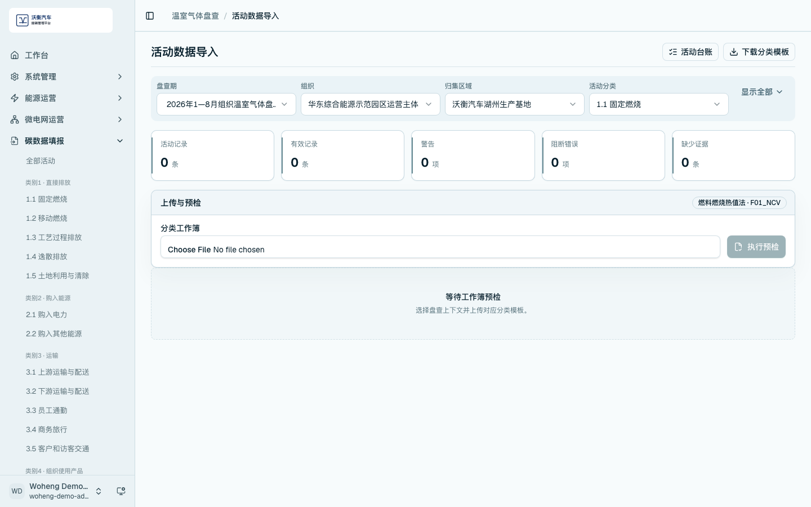
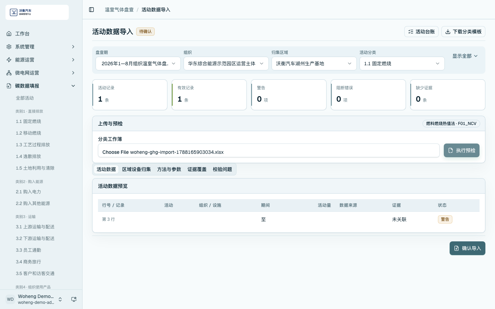
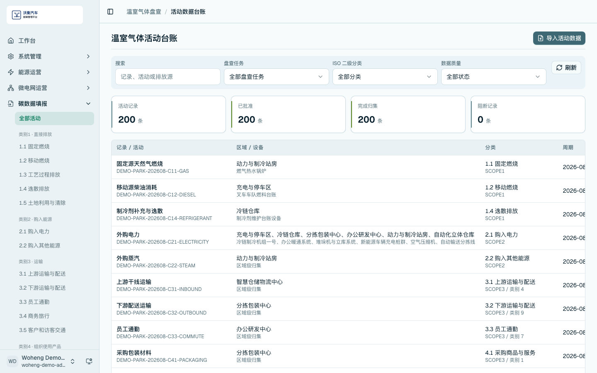
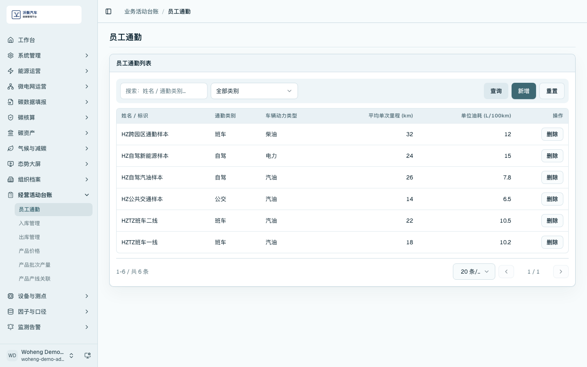
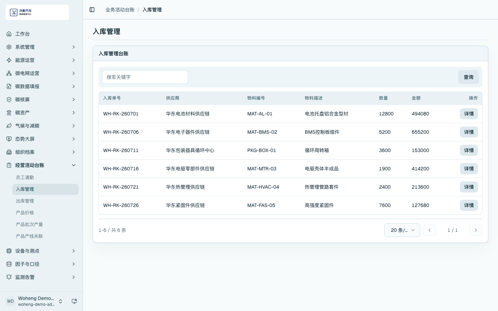
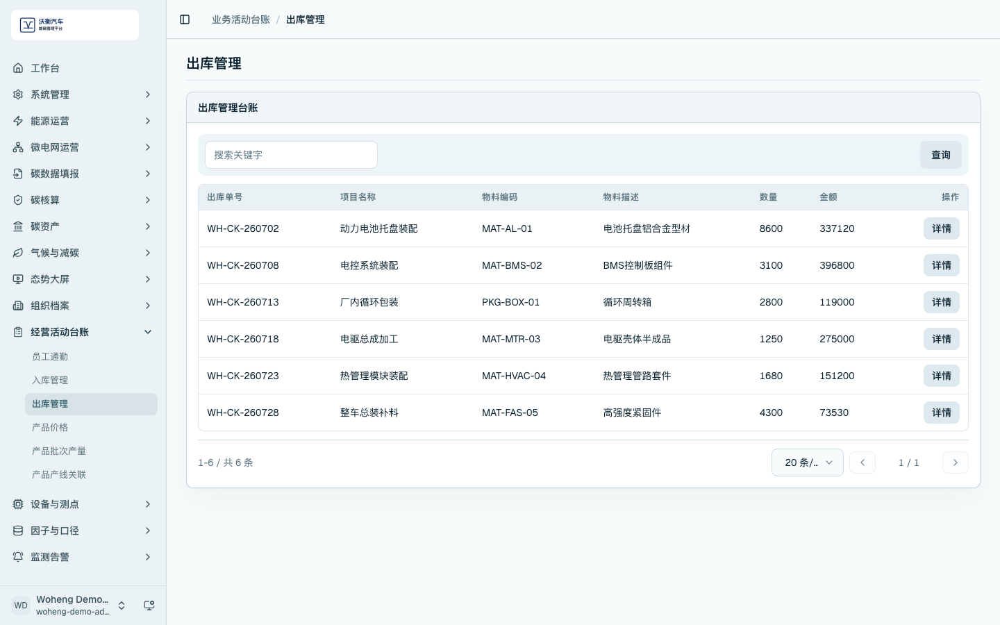
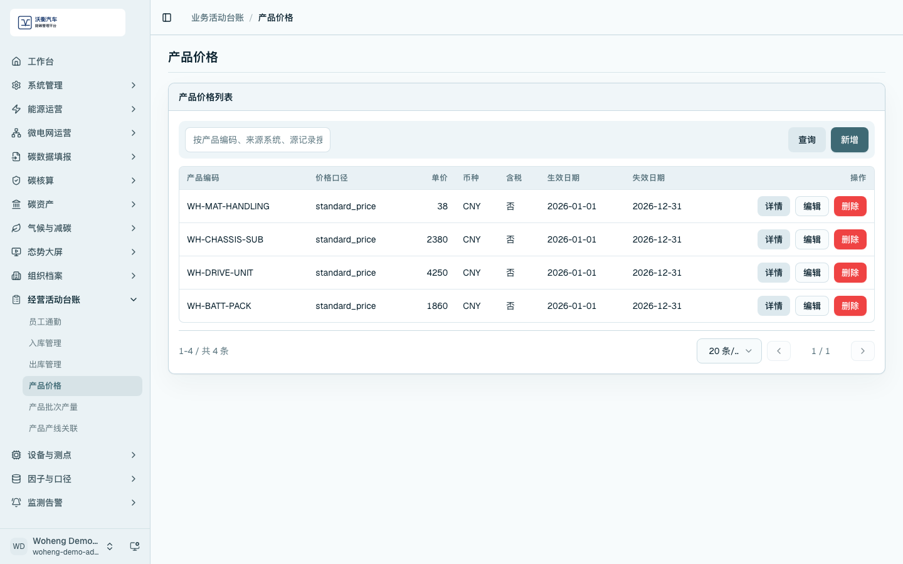
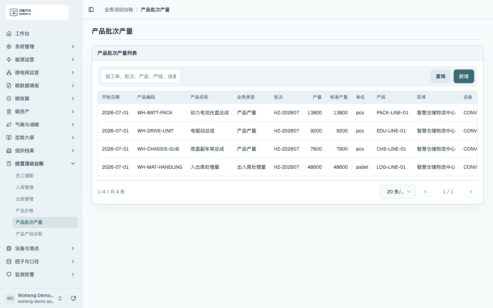
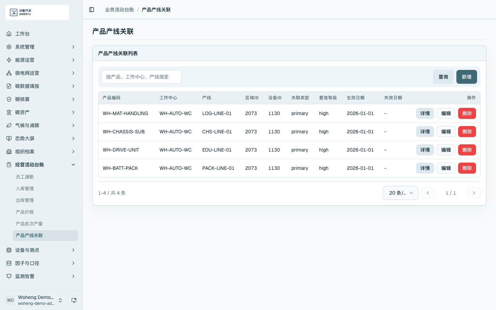

经营活动台账与非电数据导入
非电数据包括燃料、制冷剂、车辆运输、员工通勤、采购材料、生产活动和其他经营活动数据。此类数据通常不能直接从电表取得，需要通过经营活动台账或活动数据导入维护。
活动数据导入
进入 /carbon-mgmt/import，选择盘查期、组织和活动分类，下载分类模板。业务人员按模板填写活动量、单位、区域设备归集、方法参数和证据文件信息后上传。

上传后执行预检。预检结果应显示活动数据预览、区域设备归集、方法与参数、证据覆盖和可执行核算状态。确认无误后再进入导入或核算流程。

温室气体活动台账
进入 /carbon-mgmt/activities，查看已导入或已维护的活动记录。台账中应能看到活动名称、活动量、单位、分类、边界状态、质量状态和归集信息。

经营活动台账
经营活动台账用于维护支撑能碳分析的业务数据。演示时可依次说明员工通勤、入库、出库、产品价格、产品批次产量和产品产线关联。






维护检查项
- 电表以外的数据应说明来源页面或导入模板。
- 经营活动台账应显示非空业务记录。
- 活动数据导入应展示预检结果态，不只展示上传入口。
- 进入核算前应确认活动分类、单位、因子和证据字段完整。